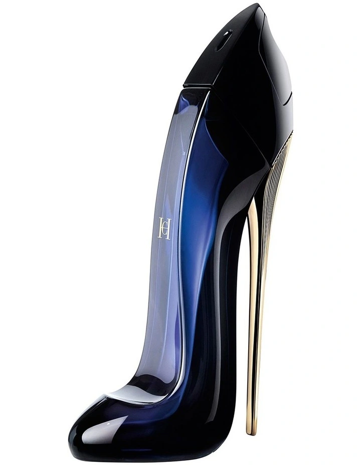
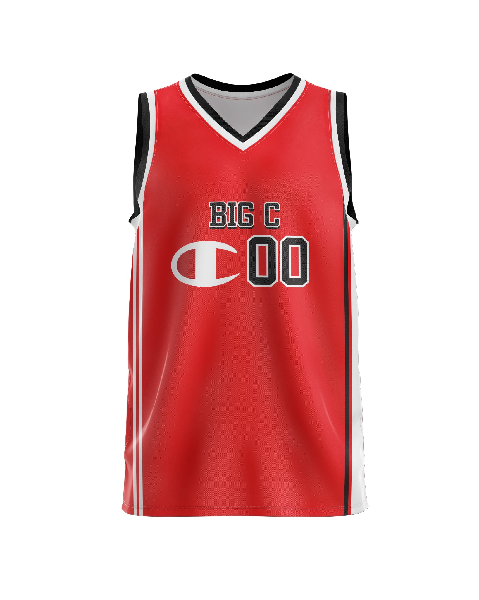
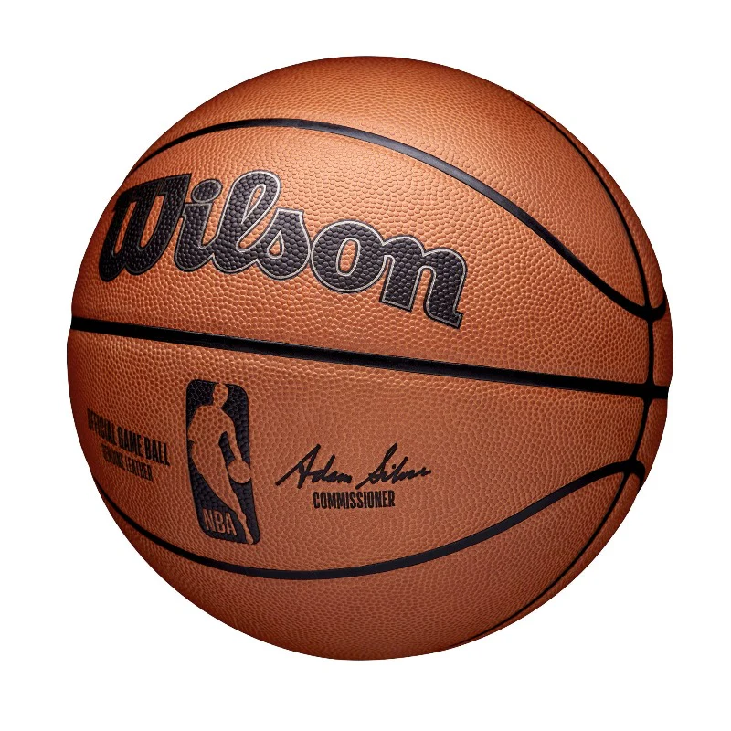

Test Image -

Output on GOOGLE LENS - Carolina Herrera Good Girl EDP Perfume
Output on MobileNet Model - Black Heel
Result -
Google Lens is more specific and Accurate
Test Image -

Output on GOOGLE LENS - Basketball Jersey
Output on MobileNet Model - Basketball Jersey
Result -
Draw
Test Image -

Output on GOOGLE LENS - Basketball
Output on MobileNet Model - Basketball
Result -
Draw
Result -
The Google Lens is more accurate and specific with the following items tested on the camera.